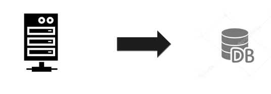

소개 (Click English Version)
안녕하세요. 저는 국민대 컴퓨터 공학에 재학 중인 임중현 입니다.
경력 및 활동
개발부 (click here)
산학과제
Deakin University
프로젝트 ※제목을 클릭하면 상세설명을 보실 수 있습니다.
Jobs
- 파이썬 API를 이용한 웹 크롤링 & 셀리늄
Jobs
개요
- 구직 사이트가 존재하고 새로운 정보가 어마어마하게 있고 지금 또한 올라오고 있다. 나와 상관 없는 분야, 또는 같은 분야에서 내 관심분야 밖인 공고도 많이 볼 수 있다. 황금같은 시간을 조금이나마 줄이기 위해 나에게 적합한 공고, 내가 원하는 분야만 볼 수 있도록 이 프로젝트를 시작하게 되었다.
개발과정
- architecture
- Web Crawling
- Text Analysis
- Selenium
- Alarm
- DB & Web Server 
- Web Server
- Docker & RaspberryPI

파이썬의 requests api와 beautifulsoup api를 사용하여 채용 공고 웹사이트의 html가져와서 내가 필요한 부분(회사이름,공고 제목, 신입or경력등)만 남기고 남어지는 지웠다.

채용공고의 url로 들어가서 그 내용들을 konply로 단어별로 나누고 word2vec api를 통해서 내가 원하는 것과 얼마나 유사한지 판단하였다.
내가 원하는 채용공고에 맞으면 앞에서 따온 회사이름을 가지고 seleinum api를 통해 그 회사의 정보를 브라우저를 통해 자동으로 가져오게 하였다.
fbchat api를 사용하여 나에게 적합한 새로운 채용공고가 있으면 facebook 메신저를 통해 알림을 보내게 하였다.
위에서 가져온 정보들을 DB에 넣고 인턴할때 공부하고 배웠던 웹기술을 이용하여 Web Server에서 불러와서 보여줄 수 있도록 만들었다.

라즈베리 안에 도커를 사용하였다. 다음과 같이 프로그램,웹서버,DB를 각각의 컨테이너로 만들고 링크를 통해 서로 연결하였다. PC와 달리 라즈베리파이는 ARM기반이라서 다른 종류의 도커 이미지 파일을 받아야 했다. 오픈 소스가 많이 없어서 라즈베리파이용 우분투 도커 이미지를 받아 프로그램을 돌릴 아나콘다와 nginx를 각각 설치하였다.
사용기술
- Python API(requests,BeautifulSoup,Word2Vec,konlpy,selenium,pymysql,fbchat 등), MariaDB, Nginx, Docker, Raspberry PI
- Github(link)
2017.07 ~ 2017.08
FPS Sytle Game
- OPENGL을 이용한 그래픽스
FPS-Sytle
개요
- 스타크래프트, 롤, 오버워치, 메이플, 서든어택, 리니지 등 게임은 누구나 즐기는 엔터테이먼트이다. 혼자 뿐 아니라 친구들과 또는 모르는 사람들과 하면 더욱 재미있다. 전에 서든어택을 친구들과 즐겼던 한 유저로써 FPS 스타일의 게임을 구현하고자 한다.
개발과정
- Shader
- Objects
- Camera
- Phong
- Texture mapping
- Complete


인터넷에서 쉽게 구할 수 있는 오픈소스들을 사용하였다.
keyboard에 키값을 받아서 3차원상에 앞뒤양옆으로 자유롭게 움직일수 있고 마우스를 통해 주위를 둘러 볼수 있도록 구현하였다.

phong reflection을 사용하여 단색이 아니라 좀더 실제처럼 빛을 구현하였다.

texture mapping을 해보았지만 안 이뻐서 삭제하고 그냥 배운 내용을 토대로 구현만 하였다.

사용기술
- opengl
- Github(link)
2017.06 ~ 2017.06
오목고
- 레고를 가지고 만든 오목게임 로봇
s
초반에는 방학이라서 시간이 많이 남아서 공부 할겸 영상인식(opencv)를 공부하였다. opencv에서는 위의 그림과 같이 영상받기,바둑돌인식,차영상들을 구현하였다.
유튜브와 오픈 소스를 통해 공부하여 게임 알고리즘에서는 승/패를 판정하는 알고리즘을 구현하였다.
최적의 위치를 찾는 컴퓨터와 바둑돌을 실제로 놓는 EV3와 통신을 하기위해 TCP/IP통신을 구현하였다.
기타, 수행계획서등 보고서 일부분을 작성하였다.
오목고
개요
- 2016년 화두였던 알파고와 이세돌의 대국으로 인공지능이 일반인에게도 친숙하게 다가왔다. 오목고는 알파고에서 영감을받아 (주)헨즈온 테크놀러지와 시작하게 되어있는데 기존의 바둑은 복잡 한 룰을 가지고 있는데 반해 오목고는 남녀노소, 아이들 까지 친숙한 오목을 인공지능과 접목시킴으로서 사람들에게 호기심과 흥미를 유발하게 만들었다. 뿐만하니라 알파고는 기계가 직접 두지 않는 반면에 오목고는 융합시대에 맞추어 Hardware와 Software를 융합하여 기존 오목들과 다르게, 누구나 어렸을때 가지고 놀았을 LEGO를 가지고 만든 기계가 직접 인간과 오목을 두게 만들었다.
시스템구조 및 개발과정
- 시스템구조
- 하드웨어
- 영상처리
- 알고리즘
- 최종시연
- 전시회
- <수상<


15X15정도 크기의 바둑판을 사용하였다. 바둑돌을 집기위하여 주사기 끝에 고무를 달고 그 고무 중앙에 바늘구멍을 뚫음으로써 바둑돌에 닿으면 피스톤을 끌어올려 바둑돌과 주사기 안을 진공상태로 만들어 들어 올린다. 그리고 EV3를 가지고 컴퓨터와 TCP/IP 통신을 통하여 컴퓨터에서 좌표 값을 받아와 바둑돌을 그 좌표 값에 놓는다. 하드웨어를 구동하기 위해 EV3 파이썬 라이브러리를 사용하였다.
카메라 웹캠을 사용하여, 바둑판 위에 고정시키고 바둑돌 좌표를 인식한다. opencv라이브러리를 이용하여 실시간으로 영상을 받아오며 사람이 두는 동그란 바둑돌을 허프서클함수를 이용하여 인식하게 하였다.

첫번째 사진과 같이 여러 원을 한번에 인식하면 인식률이 떨어져서 위 그림과 같이 차영상을 통하여 새로 들어온 바둑돌만을 인식하게 하였다.

가중치 알고리즘은 돌의 개수에 따라서 가중치를 할당한다.예를 들어 가로로 돌이 2개이면 양옆은 가중치를 2를 준다는 식으로 평가하였다.

민맥스 알고리즘은 앞서 사용한 가중치를 가지고 한수 두수 앞을 보고 어디에 두면 좋을지를 계산하는 알고리즘이다.

외부 평가원들이 좋게 봐주어서 수상까지하는 퀘거를 이루었다.
역활
사용기술
- 영상처리(openCV) / C++->Java / Python / TCP/IP통신 / 승패 알고리즘 / 가중치 알고리즘 / MinMax 알고르즘 / 레고 / EV3
- 링크(link)
2017.01 ~ 2017.05
추천 시스템
- 아마존 상품 리뷰를 가지고 하둡으로 구현한 추천 시스템
리뷰추천시스템
개요
- 상품을 구매 할 때 사용자들은 리뷰를 보고 구매하는 경향이 있다. 하지만 리뷰는 가장 최근의 작성된 리뷰 순으로 나타나 있는 경우가 많기 때문에 사람들은 어느 리뷰가 상품에 대한 적합한 리뷰인지 구분하기가 힘들다. 따라서 본 프로젝트는 단순히 리뷰를 보여주는 것이 아니라 좀 더 구매자들의 평가가 많은 리뷰를 보여주는 프로그램을 구현하고자 진행하게 되었다.
개발과정
- MAP
- REDUCE
아마존 리뷰 텍스트 파일을 json파일로 불러들여서 상품번호(asin),리뷰(reviewText) 그리고 사용자들의 평가 횟루를 나타내는 helpful의 분모를 추출한다.
helpful의 분자는 긍정적인 리뷰평을 한 구매자의 수를 나타내고, 분모는 리뷰평에 참여한 구매자의 수를 나타낸다.
Map의 context.write에서 key값은 “asin”을 사용하고 value값은 “helpful”의 분모와 “reviewText”를 세미콜론(;)을 경계로 합친 Text형식으로 Reduce로 보낸다.

Map으로부터 key(“asin”)와 value(“helpful” + “reviewText”)를 받는다. 이때 value를 “helpful”과 “reviewText”를 세미콜론(;)을 경계로 split을 사용하여 구분한다. Text형식인 “helpful”을 Integer형으로 변환하여 같은 key(“asin”)중에 최대값을 추출하고 그 key(“asin”)의 대한 “reviewText”를 출력한다.
사용기술
- hadoop / json.jar
- Github(link)
2017.05 ~ 2017.05